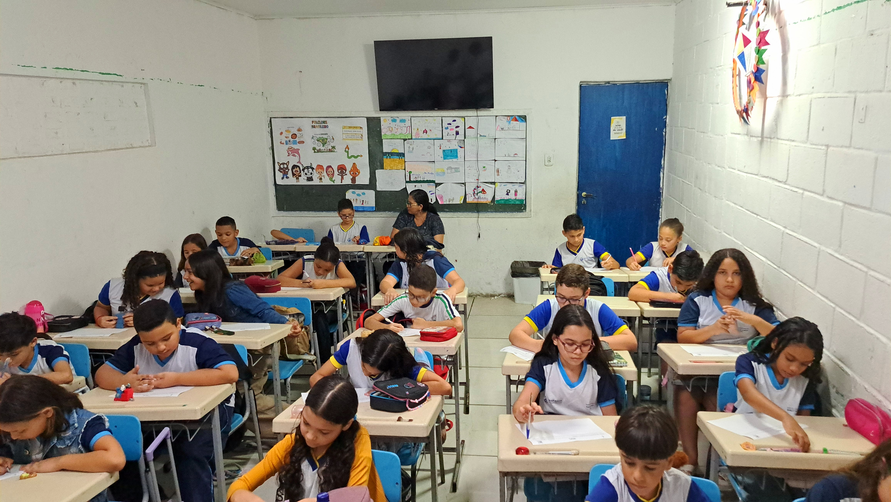
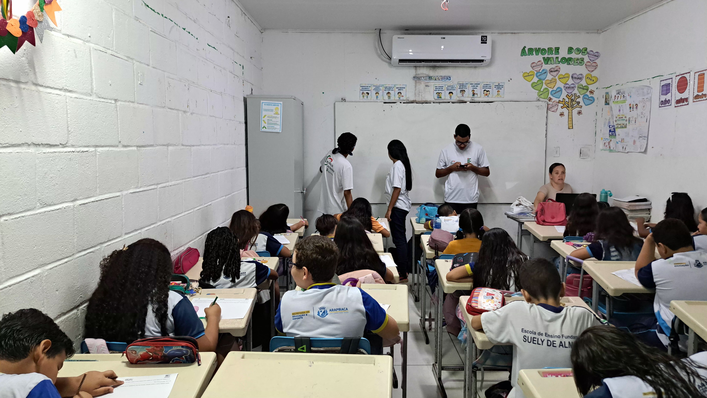
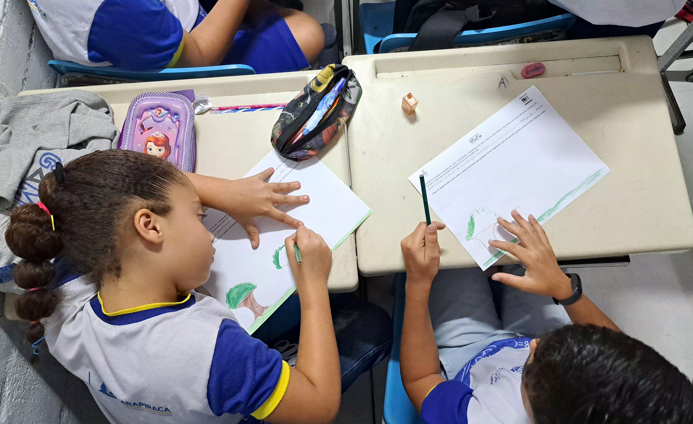
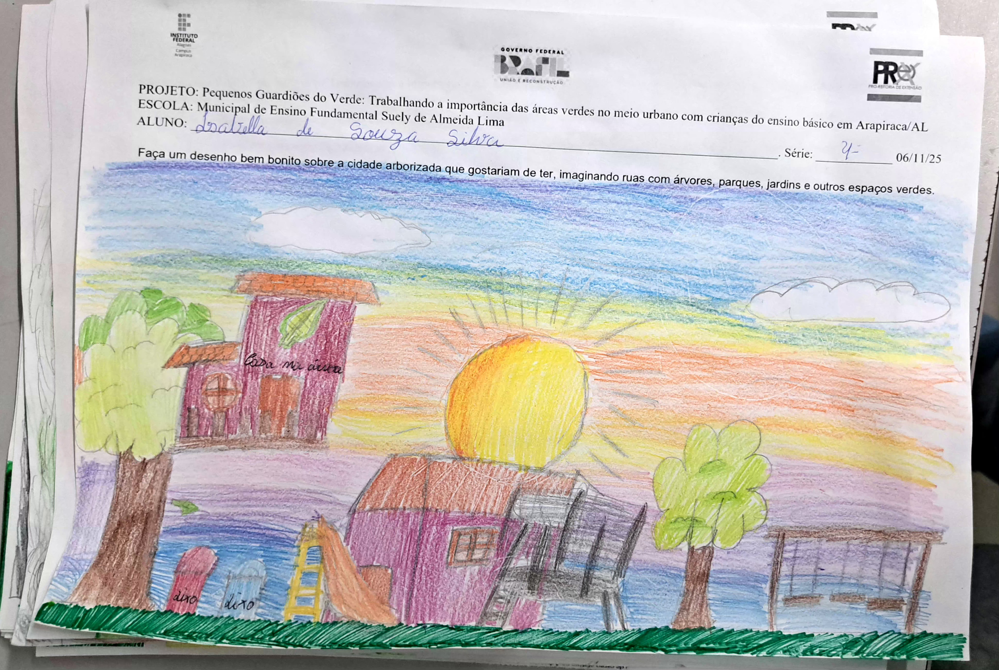
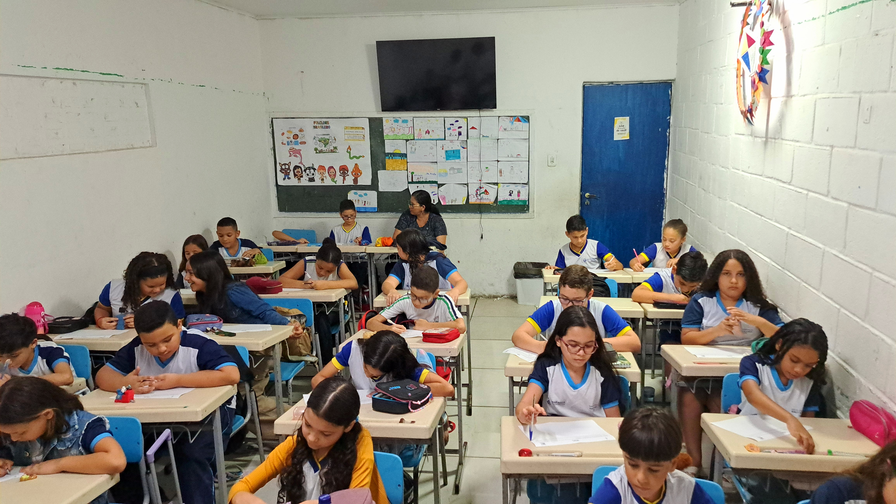
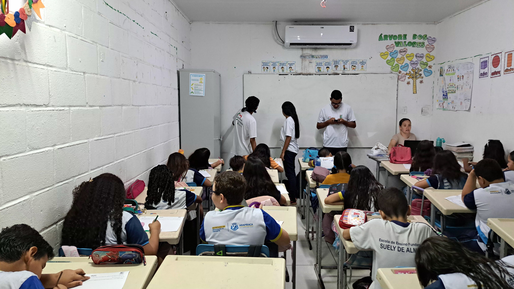
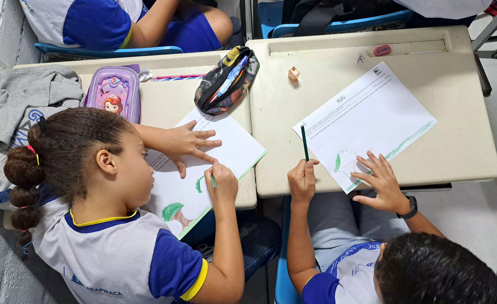
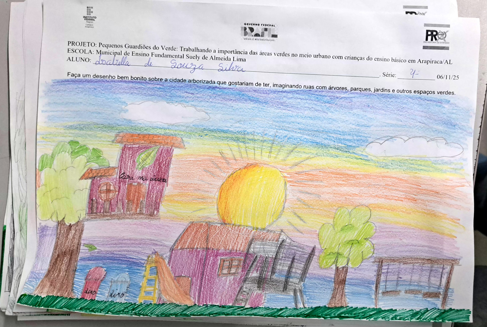

Desenhando um Mundo Verde
 







Em 06 de novembro, realizamos a atividade de encerramento do projeto "Pequenos Guardiões do Verde" com a proposta inspiradora "Desenhando um Mundo Verde". Esta última iniciativa convidou as crianças a sintetizarem, por meio da expressão artística, toda a jornada de aprendizados vivenciada ao longo do projeto, materializando em cores e formas sua visão de um futuro sustentável.
Desenvolvimento da Atividade
- Expressão de Futuros Sustentáveis: As crianças criaram desenhos representando sua cidade ideal, repleta de árvores, parques, praças arborizadas e rios limpos, demonstrando como internalizaram os conceitos de sustentabilidade urbana;
- Criatividade e Sensibilidade Ambiental: As produções artísticas revelaram uma notável compreensão sobre a importância das áreas verdes, mostrando casas e prédios integrados harmonicamente com a natureza;
- Premiação Simbólica: Selecionamos um desenho para receber um brinde especial, celebrando não apenas o talento artístico, mas principalmente a profundidade da mensagem ambiental transmitida.
Resultados e Significados
A atividade permitiu:
- Avaliação de Aprendizado: Os desenhos funcionaram como termômetro do impacto do projeto, demonstrando como as crianças assimilaram e ressignificaram os conceitos trabalhados
-
Expressão Emocional: Através da arte, os participantes externalizaram seus desejos e esperanças para o futuro ambiental de sua cidade - Culminância do Projeto: A atividade sintetizou todos os eixos trabalhados - consciência ecológica, criatividade e empowerment infantil - fechando o ciclo de forma coerente e emocionante
- Legado de Esperança: As produções serviram como testemunho do potencial transformador da educação ambiental na formação de cidadãos conscientes e responsáveis.
O "Desenhando um Mundo Verde" coroou com sensibilidade e significado todo o percurso do projeto, deixando como legado não apenas desenhos coloridos, mas a certeza de que sementes de transformação foram plantadas na mente e no coração de cada pequeno guardião.